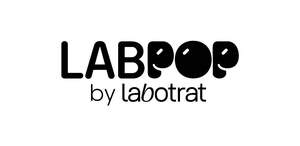

Trade Mark Journal No.2025/048 28 November 2025
UK00004297453 19 November 2025 (3,35)

- Class 3
- Cologne water [eau de cologne]; Micellar water; Stain remover water; Cotton for personal hygiene; Cotton for cosmetic use; Clay for aesthetics; Conditioner [cosmetic]; Hair conditioners; Cosmetics; Cosmetic creams; Polishing creams; Skin moisturizers for cosmetic purposes; Hair lotions; Lotions for cosmetic use; Essential oils; Cleansing oils; Oils for cosmetic use; Ointments for cosmetic use; Cosmetic preparations for baths; Cosmetic preparations for skin care; Collagen preparations for cosmetic purposes; Personal hygiene preparations namely soaps, exfoliant cream, beauty masks, cosmetic creams, ointments for cosmetic use, beauty serums, skin lotions, cleansing gels, anti-aging skincare preparations, depilatory wax and shampoos; Soaps; Deodorant soap; Shaving soap; Tonics for cosmetic purposes; Shampoos.
- Class 35
- Business administration; Business management assistance; Business management consultancy; Sales promotion for third parties; Retail services in relation to cosmetics; retail services of hair lotions; retail services in relation to hygienic preparations for medicinal use; retail services in relation to perfumery products; wholesale services in relation to cosmetics; wholesale services of hair lotions; wholesale services in relation to hygienic preparations for medicinal use; wholesale services in relation to perfumery products.
LABOTRAT Indústria de Cosméticos Ltda.
Representative: Marks & Clerk LLP